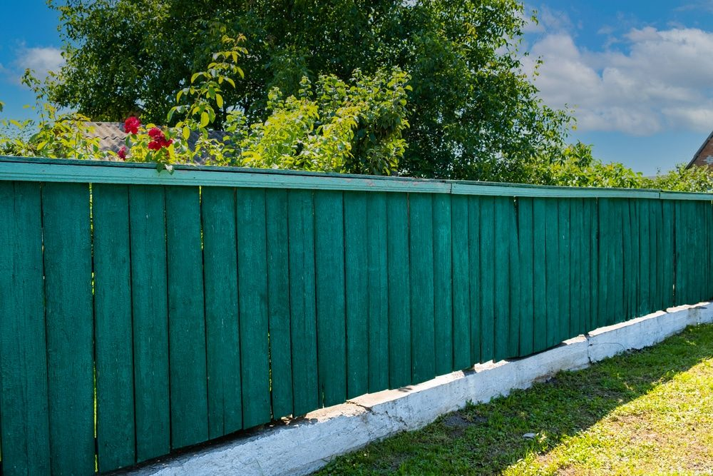
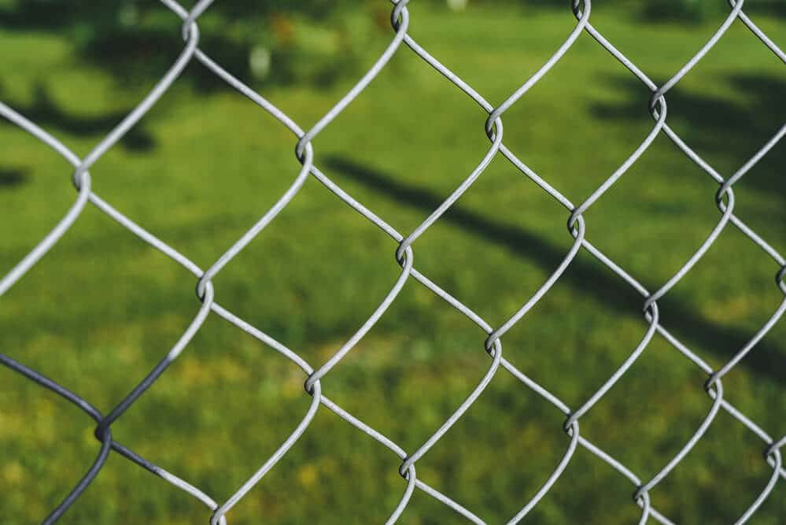

In This Guide
- Chain link and basic wood fences are generally the most cost-effective choices for a New Orleans home, though each trades some durability or privacy for the lower price.
- Material, fence length, height, and quality decide most of the price, and installation, upkeep, and repairs decide the rest over the years.
- Barbed wire and electric fencing show up on cheap-fence lists but suit rural land, not a residential lot.
- A smaller footprint, a plain design, and side-by-side written quotes are the easiest ways to keep the cost down.
A fence protects your privacy, keeps kids and pets in the yard, and finishes off the look of a property. It can also get expensive fast, especially when there is a lot of perimeter to cover. The good news is that a few smart choices keep the bill in check.
This guide from Big Easy Fence covers the least expensive fence options for New Orleans homes, what pushes the price up, and how to avoid buying something that costs you more later.
Why Cost Deserves a Plan
A fence is a real investment, and the sticker price is only the first number. Decide on a budget before you start shopping, and include everything the fence will cost over its life.

- Installation. Labor, post holes, concrete, and hardware sit on top of the material price.
- Maintenance. Staining, painting, and cleaning are recurring costs, and some materials need far more of them.
- Repairs. A fence that fails early costs more than the one you priced carefully.
- Purpose. A fence for privacy costs more than one that only marks a boundary, so decide what the fence has to do.
What Drives the Price of a Fence
Two homes can ask for the same style of fence and get very different quotes. These factors explain why.
Material
Wood fences tend to cost less than vinyl or metal, and chain link is usually among the least expensive options overall. Higher-grade materials cost more up front and can save money in repairs.
Length and Height
Every extra foot of fence means more posts, more material, and more labor. Taller fences use more material too, so a six-foot privacy fence costs more than a four-foot boundary fence.
Quality and Design
Thicker chain link, better lumber, and decorative touches all raise the price. A plain design is nearly always cheaper than a custom one.
The Least Expensive Fences to Consider
| Fence Type | Upfront Cost | Privacy | Upkeep |
|---|---|---|---|
| Chain Link | Among the lowest | Low without slats | Low |
| Basic Wood Picket | Low to moderate | Low to moderate | Moderate |
| Split Rail | Low to moderate | Very little | Moderate |
| Wood Privacy Fence | Moderate | High | Moderate |
Chain Link
A chain link fence is the classic budget pick. Size, height, and the gauge of the wire set the price, and thicker wire costs more but lasts longer. It keeps pets and kids in and marks the property line, though it offers little privacy on its own.

Basic Wood
A simple wood fence gives you a warmer look at a modest price. The wood type matters. Pine costs less than cedar, and cedar resists rot better, so the cheaper board may need more upkeep down the road.
Split Rail
Split rail fencing uses fewer materials because there are no boards to fill in. It marks a boundary and looks rustic, but it will not give you privacy or keep small pets contained. Cedar rails cost more than pine ones.
Barbed Wire and Electric
These two appear on many cheap-fence lists, and we would skip them for a home. Both are built for livestock and open land. Electric systems also involve wiring that should only be handled by someone qualified.
How to Keep the Cost Down
- Fence only what you need. Enclosing the backyard alone can cut the run in half.
- Choose a plain style. Extra trim, lattice, and custom shapes add labor.
- Limit the gates. Each gate adds hardware and framing.
- Get several written quotes. Compare materials, height, and what is included line by line.
- Think about upkeep. A slightly better material can spare you years of staining and patching.
Chain link and wood are the most cost-effective choices for most homes, but they may not last as long as vinyl or metal. Weigh the lower price against how long you plan to stay in the house.
Local Conditions That Affect Long-Term Cost
A fence that saves money in Ohio can lose it in New Orleans. Heavy rain, humidity, and summer heat are hard on inexpensive materials, so it pays to plan for them.
- Wood and moisture. Untreated or unsealed wood soaks up water and starts to rot. Budget for sealer or stain and reapply it on a schedule.
- Chain link and rust. A good galvanized or coated finish keeps the wire from rusting, so ask what coating a quote includes.
- Storms. Posts set deep and secured well hold up better in high winds, which means fewer repairs after a storm.
Final Thoughts on Affordable Fencing
The least expensive fence is the one that meets your needs at the lowest total cost, and that is rarely the lowest price tag. Match the material to the job, keep the design simple, and count upkeep and repairs alongside installation.
If you would like help pricing a few options for your yard, our residential fencing team can walk the property with you and give you a free estimate. You can also browse the full list of fence types to see what else is out there.
Want a Fence That Fits Your Budget?
Share your yard size and your goals, and we will help you narrow down the options that make sense.